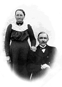

Frans Edvard Fredman
Blev 72 år.
| Född: | 1861-02-26 Norsjö, Norsjö sn. [1] | Född utom äktenskap.Modern Pigan Augusta Charlotta Fredman, 22 år. har varit piga hos klockarfamiljen Lidén i Storliden, Norsjö sn i sex år innan Frans Edvards födelse. Höggravida Augusta Charlotta Fredman och Johan Olof Lidén har begått nattvard tillsammans. |
|---|
| Döpt: | 1861-02-27 Norsjö, Norsjö sn. [2] | Dopvittnen: Erik Albert Eriksson o. hustru på Norsjö 11; Bonden Fredrik Andersson o. hustru på Norsjö 8; Pehr Johan Bjur i Bjurträsk och Barnmorskan Stina Cajsa Bjuhr i Norsjöby; Skomakaren Jon Hällgren och Pigan Emma Bergström i Norsjö (Augusta Charlotta's kusin). |
|---|
| Levde: | 1862 Norsjö 11, Norrbyn, Norsjö sn. [3] | Mor Charlotta tjänar Piga hos Fadderfamiljen Bonden Erik Albert Eriksson och hans hustru Johanna Granat. |
|---|
| Levde: | 1863 Norsjö 8, Norrbyn, Norsjö sn. [4] | Inhysta hos Fadderfamiljen Bonden Fredrik Andersson f.1820-11-02 och hustrun Severina Granat f.1823-10-13. |
|---|
| Levde: | 1871 Norsjö 8, Norrbyn, Norsjö sn. [5] | |
|---|
| Levde Dräng: | 1876 Klingnäs, Norsjö sn. [6] | |
|---|
| Levde Dräng: | 1881 Nyberg, Norsjö sn. [7] | |
|---|
| Änkling: | 1932-10-28 Grundfors 1, Björksele fs, Lycksele sn. [8] | |
|---|
| Död: | 1933-10-10 Grundfors 1, Björksele fs, Lycksele sn. [8] | Dödsorsak: Lunginflammation. 3520 S. |
|---|
| Levde: | 1883 Norsjö 2, Sörbyn, Norsjö fs, Norsjö sn. [9] | |
|---|
| Vigsel: | 1883-11-21 Norsjö 2, Sörbyn, Norsjö fs, Norsjö sn. [10] | |
|---|
| Omflyttad till: | 1888 Norsjö 3, Sörbyn, Norsjö sn. [11] | |
|---|
| Utflyttad från: | 1890-12-29 Norsjö 3, Sörbyn, Norsjö sn. [11] | Utfl.attest nr 48/1890. |
|---|
| Inflyttad till: | 1890-12-30 Zefansvik 1, Björksele, Lycksele sn. [12] | |
|---|
| Omflyttad till: | 1912 Grundfors 1, Lycksele sn. [13] | |
|---|
| Levde: | 1920 Grundfors 1, Björksele, Lycksele sn. [13] | |
|---|
Noteringar
Frans Edvard* Fredman finner en vän för livet - en syssling, Tilda* Agatha Grahn - en ättling till klockaren Olof Persson, som blir hans hustru och moder till min farfar. Edvard Fredman var en "oäkting" - född utom äktenskap, en invandrare i 4:e ledet, med ett för Norsjö sn ovanligt släktnamn. Nåväl - arvet efter Klockaren Olof Persson ifrån Bastuträsk har manifesterat sig på många sätt! Edvard Fredman var en tusenkonstnär - nybyggare, smed - bl.a. låssmiden m.m. i Zefansvik, Björksele, Lycksele sn (ett fungerande lås med nyckel från 1890-talet förvaras hos Berthold Fredman i Zefansvik, Björksele), barnmorska, orgelbyggare, fiolspelare, gitarrkonstruktör (en sonson Ivar Fredman, etablerad jazzmusiker, hade en gitarr bygd av farfar förvarad i Gävle 2004) m.m. Edvard Fredmans barn, barnbarn och barnsbarnbarn kan sägas vara autodidakter, dvs. spelar av hjärtans lust på allehanda instrument utan svårigheter med eller utan noter. Ferdinand Fredman, en sonson, etablerad och erkänt skicklig båtbyggare i Björksele, Lycksele sn, fiol- och dragspelare. Ivar Fredman, gitarrist och jazzmusiker - hans syster, Mirjam Fredman, pianist (autodidakt) m. fl. Hennes kusin, min far, Ingvar Fredman gick i lära hos sin farbror Ferdinand Fredman. Min far hade en orkester på 1940-talet, som turnerade omkring t.o.m. i Norge.
De senaste i min närhet på denna lista av musiker i klockaren Olof Persson's anda är sonsons sonsons sonson - Civ. Ing. i bioteknik, Med. Dr. i biometri vid Karolinska institutet i Stockholm, Post.Doc., Gen- och evolutionsforskaren i Bergen, assist. professor i Wien, David Fredman - skapare av s.k. Housemusic och hans broder Peter Fredman, med absolut gehör, utbildad vid Afromusiker-linjen vid Kungl. Musikhögskolan i Stockholm. Peter har etablerat sig som jazzmusiker och hävdas av musikkritiker vara en av Sveriges mest lovande unga saxofonister i bl.a. Fredrik Norén's Band (www.mirror.com) m.fl. konstellationer och systern Maria med sin tidigt utvecklade ljuvliga klockrena sopranstämma.
Nu är det fastställt genom dna-test att Johan Olof Liden är far till Frans Edvard* Fredman. Vi tillhör en haplogrupp I1 >DF29 >Y11210. Vår tidigast kände och
dokumenterad förfader är Tomas Larsson d.1558, bonde på Norsjö 9, Skellefteå socken. Du kan avläsa mina STR-markörer via denna länk:
www.familytreedna.com/public/Sweden?iframe=yresults
Klicka på Ctrl+F och skriv sökorden Y11210, så kommer du till min rad!
Kit nr 319422 Tomas Larsson d.~1558 owner Norsjö 9 1539-58 (SWE)
Personhistoria
| Årtal | Ålder | Händelse |
|---|
| 1861 |
|
Födelse 1861-02-26 Norsjö, Norsjö sn [1] |
| 1861 |
1 dagar |
Dop 1861-02-27 Norsjö, Norsjö sn [2] |
| 1862 |
|
Levde 1862 Norsjö 11, Norrbyn, Norsjö sn [3] |
| 1863 |
|
Levde 1863 Norsjö 8, Norrbyn, Norsjö sn [4] |
| 1865 |
3 år |
Makan Tilda Agatha Grahn föds 1865-02-04 Norsjö 2, Sörbyn, Norsjö fs, Norsjö sn [14] |
| 1866 |
5 år |
Halvsystern Sofia Olivia Olofsdotter föds 1866-06-09 Norsjö, Norsjö sn [15] |
| 1871 |
|
Levde 1871 Norsjö 8, Norrbyn, Norsjö sn [5] |
| 1872 |
11 år |
Halvsystern Anna Antoinetta Norqvist föds 1872-07-01 Norsjö 8, Norrbyn, Norsjö sn [5] |
| 1874 |
13 år |
Halvbrodern Johan Anton Norqvist föds 1874-03-27 Norsjö 8, Norrbyn, Norsjö sn [5] |
| 1875 |
14 år |
Halvbrodern Johan Edvard Lidén föds 1875-06-23 Norsjö 6, Norrbyn, Norsjö sn [16] |
| 1875 |
14 år |
Halvbrodern Johan Edvard Lidén dör 1875-06-23 Norsjö 6, Norrbyn, Norsjö sn [17] |
| 1876 |
|
Levde Dräng 1876 Klingnäs, Norsjö sn [6] |
| 1876 |
15 år |
Halvbrodern Kalixtus Norqvist föds 1876-10-14 Norsjö 8, Norrbyn, Norsjö sn [5] |
| 1876 |
15 år |
Halvbrodern Johan Emil Lidén föds 1876-12-04 Norsjö 6, Norrbyn, Norsjö sn [18] |
| 1878 |
16 år |
Fadern Johan (Janne) Olof Lidén dör 1878-01-31 Norsjö 6, Norrbyn, Norsjö sn [19] |
| 1879 |
18 år |
Halvbrodern August Oskar Norqvist föds 1879-10-08 Norsjö, Norsjö sn [20] |
| 1881 |
|
Levde Dräng 1881 Nyberg, Norsjö sn [7] |
| 1883 |
|
Levde Tilda Agatha Grahn 1883 Norsjö 2, Sörbyn, Norsjö fs, Norsjö sn [9] |
| 1883 |
22 år |
Halvbrodern Gustaf Harald Norqvist föds 1883-11-17 Norsjö 8, Norrbyn, Norsjö sn [20] |
| 1883 |
22 år |
Halvbrodern Gustaf Harald Norqvist dör 1883-11-21 Norsjö 8, Norrbyn, Norsjö sn [20] |
| 1883 |
22 år |
Vigsel Tilda Agatha Grahn 1883-11-21 Norsjö 2, Sörbyn, Norsjö fs, Norsjö sn [10] |
| 1884 |
23 år |
Sonen Frans Oskar Fredman föds 1884-06-02 Norsjö 2, Sörbyn, Norsjö fs, Norsjö sn [21] |
| 1886 |
24 år |
Dottern Jenny Sofia Fredman föds 1886-01-28 Norsjö 2, Sörbyn, Norsjö fs, Norsjö sn [22] |
| 1886 |
24 år |
Dottern Jenny Sofia Fredman dör 1886-02-21 Norsjö 2, Sörbyn, Norsjö fs, Norsjö sn [23] |
| 1888 |
|
Omflyttad till Tilda Agatha Grahn 1888 Norsjö 3, Sörbyn, Norsjö sn [11] |
| 1889 |
28 år |
Sonen Fritz Eugen Fredman föds 1889-06-05 Björksele fs, Lycksele sn [24] |
| 1890 |
29 år |
Utflyttad från Tilda Agatha Grahn 1890-12-29 Norsjö 3, Sörbyn, Norsjö sn [11] |
| 1890 |
29 år |
Inflyttad till Tilda Agatha Grahn 1890-12-30 Zefansvik 1, Björksele, Lycksele sn [12] |
| 1895 |
33 år |
Sonen Johan Edvard Fredman föds 1895-01-01 Zefansvik 1, Björksele, Lycksele sn |
| 1895 |
33 år |
Sonen Johan Edvard Fredman dör 1895-01-10 Zefansvik 1, Björksele, Lycksele sn |
| 1896 |
35 år |
Sonen Johan Ferdinand Fredman föds 1896-04-03 Zefansvik 1, Björksele fs, Lycksele sn [25] |
| 1898 |
37 år |
Modern Augusta Charlotta Fredman dör 1898-06-24 Norsjö, Norsjö sn [26] |
| 1901 |
40 år |
Dottern Rut Augusta Maria Fredman föds 1901-09-09 Zefansvik 1, Björksele, Lycksele sn |
| 1905 |
44 år |
Sonen Harald Ingevald Paulin Fredman föds 1905-09-13 Zefansvik 1, Björksele, Lycksele sn |
| 1912 |
|
Omflyttad till Tilda Agatha Grahn 1912 Grundfors 1, Lycksele sn [13] |
| 1920 |
|
Levde Tilda Agatha Grahn 1920 Grundfors 1, Björksele, Lycksele sn [13] |
| 1920 |
59 år |
Sonen Fritz Eugen Fredman dör 1920-04-22 Zefansvik 1, Björksele, Lycksele sn [27] |
| 1932 |
71 år |
Änkling 1932-10-28 Grundfors 1, Björksele fs, Lycksele sn [8] |
| 1932 |
71 år |
Makan Tilda Agatha Grahn dör 1932-10-28 Grundfors 1, Björksele fs, Lycksele sn [8] |
| 1933 |
72 år |
Sonen Frans Oskar Fredman dör 1933-03-27 Grundfors 1, Björksele fs, Lycksele sn [28] |
| 1933 |
72 år |
Död 1933-10-10 Grundfors 1, Björksele fs, Lycksele sn [8] |
Källor
| [1] | Norsjö C:3 (1853-1864) k.1/3, AI:5 (1853-61) fol. 268 k.9/9 |
| |
| | |
| [2] | Norsjö C:3 (1853-1864) k.1/3 |
| |
| | |
| [3] | Norsjö AI:6 (1862-1871) fol. 29 k.1/9 |
| |
| | |
| [4] | Norsjö AI:6 (1862-1871) fol. 19 k.1/9 |
| |
| | |
| [5] | Norsjö AI:7 (1872-1881) fol. 21 k.1/11 |
| |
| | |
| [6] | Norsjö AI:7 (1872-1881) fol. 373 k.11/11 |
| |
| | |
| [7] | Norsjö AI:7 (1872-1881) fol. 367 k.11/11 |
| |
| | |
| [8] | Björksele AIIA:1 (1923-1933) fol. 113 k.3/6 |
| |
| | |
| [9] | Norsjö AI:8 (1881-1891) fol. 7 k.1/13 |
| |
| | |
| [10] | Norsjö AI:8 (1882-1891) fol. 7 k.1/13, Lycksele AI:14B (1890-1899) fol. 644 k.27/29 |
| |
| | |
| [11] | Norsjö AI:8 (1881-1891) fol. 8 k.1/13 |
| |
| | |
| [12] | Lycksele AI:14B (1890-1899) fol. 644 k.27/29 |
| |
| | |
| [13] | Lycksele AII:1B (1900-1920) fol. 357 k.4/6 |
| |
| | |
| [14] | Norsjö AI:6 (1862-1871) fol. 5 k.1/9 |
| |
| | |
| [15] | Norsjö C:3 (1864-1875) k.2/3, GID 2013.4.39500, AI:6 (1862-1871) fol. 19 k.1/9 |
| |
| | |
| [16] | Norsjö C:3 (1853-1878) |
| |
| | |
| [17] | Norsjö F:2 (1860-1891) |
| |
| | |
| [18] | Norsjö C:3 (1865-1878) k.3/3 |
| |
| | |
| [19] | Norsjö F:2 (1860-1889) s.34 k.1/2, AI:7 (1872-1881) fol.18 k.1/11 |
| |
| | |
| [20] | Norsjö AI:8 (1882-1891) fol. 24 k.1/13 |
| |
| | |
| [21] | Norsjö C:4 (1883-1888) 65/1884 k.2/6, AI:8 (1882-1891) fol. 8 k.1/13, Lycksele AI:14B (1890-1899) fol. 644 k.27/29 |
| |
| | |
| [22] | Norsjö C:4 (1883-1888) 19/1886 s.40 k.2/6, AI:8 (1882-1891) fol. 7 k.1/13 |
| |
| | |
| [23] | Norsjö F:2 (1860-1889) s.50 k.1/2, AI:8 (1882-1891) fol.7 k.1/13 |
| |
| | |
| [24] | Norsjö C:4 (1888-1892) 86/1889 s.68 k.3/6, AI:8 (1882-1891) fol. 8 k.1/13, Lycksele AI:14B (1890-1899) fol. 644 k.27/29 |
| |
| | |
| [25] | Lycksele AII:1B (1890-1899) fol. 644 b.27/29 |
| |
| | |
| [26] | Norsjö F:4 (1895-1900) 60/1898 s.27 k.1/5, AI:9A (1892-1899) fol. 46 k.2/10 |
| |
| | |
| [27] | Lycksele AII:1E (1900-1920) fol. 1110 k.5/7, F:5 (1913-1927) |
| |
| | |
| [28] | Björksele AIIA:1 (1923-1933) fol. 113 k.3/6, F: 3/1933 k.8/11 |
| |
|
 |
| Min farfars far Edvard Fredman. |
| |
|  |
| Tilda Grahn och Edvard Fredman. |
|

{kind=link}